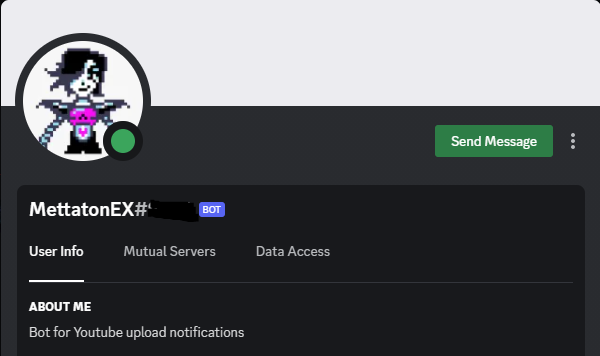

MettatonEX
A customizable Discord bot that watches a YouTube channel's RSS feed and posts a polished embed in a server channel the moment a new video drops.

The problem
YouTube's native push notifications are noisy and unreliable, and "subscribe + bell" doesn't help a Discord community show up together when a creator posts something new. I wanted a small, focused bot that lives in a server, watches one channel's feed, and posts a nicely-formatted message the instant a new upload appears — nothing else.
The approach
Discord's API is great at receiving events but doesn't natively
know about YouTube. Rather than reach for the YouTube Data API
(quota-limited, OAuth-heavy, overkill), MettatonEX polls
YouTube's public per-channel RSS feed
(youtube.com/feeds/videos.xml?channel_id=…) and
compares the most recent entry's ID against the last one it
announced. If they differ, it builds a Discord embed — title,
link, author, channel avatar, max-resolution thumbnail — and
posts it to a configured channel.
How it works
- An event handler registers slash commands and the ready/interaction events when the bot boots.
- A checkVideo function pulls the channel's RSS feed via
rss-parser, diffs the latest item against a tinyvideo.jsonpersistence file, and triggers an announcement on change. - An EmbedBuilder assembles the message with a thumbnail derived from the YouTube video ID (
img.youtube.com/vi/<id>/maxresdefault.jpg) — no extra API call needed. - Configuration is via
.env: channel ID, guild ID, target Discord channel, avatar URL. Drop your IDs in, runnode ., and the bot is yours.
What I'd change
- Move the polling loop to a proper scheduler with backoff, instead of a fixed interval.
- Replace the JSON file with a small SQLite store so multiple servers and multiple watched channels work without stomping on each other.
- Add a
/watch <channel>slash command so admins can configure the bot from inside Discord rather than editing.env.
Why I'm proud of it
It's a tiny piece of code that does exactly one thing reliably, with no third-party services in the loop besides Discord and YouTube's own public feed. It taught me how to think about long-running event-driven processes, how to keep just enough state on disk, and how much of the YouTube API surface you can avoid if you're willing to read a feed.